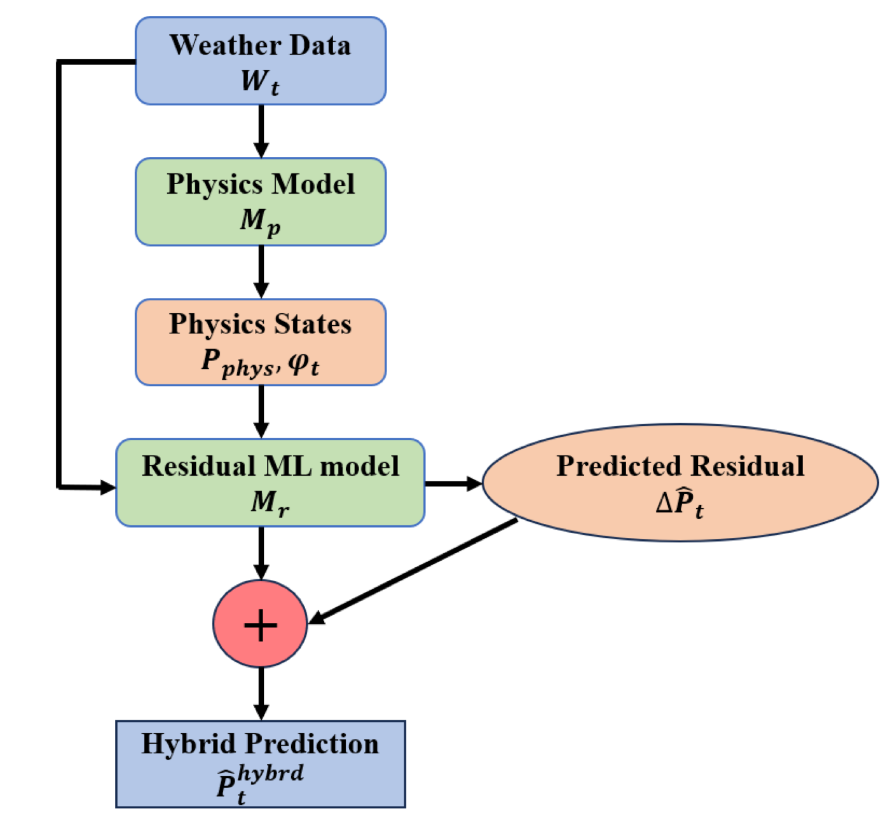
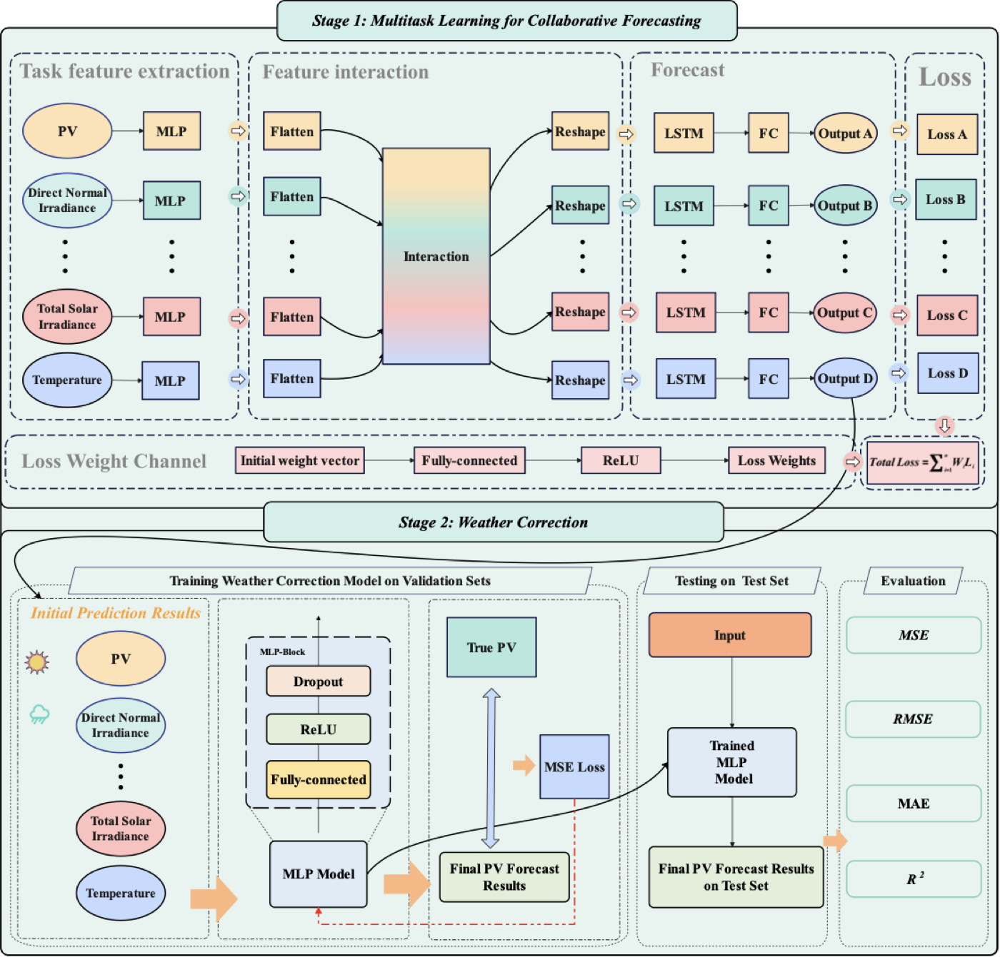
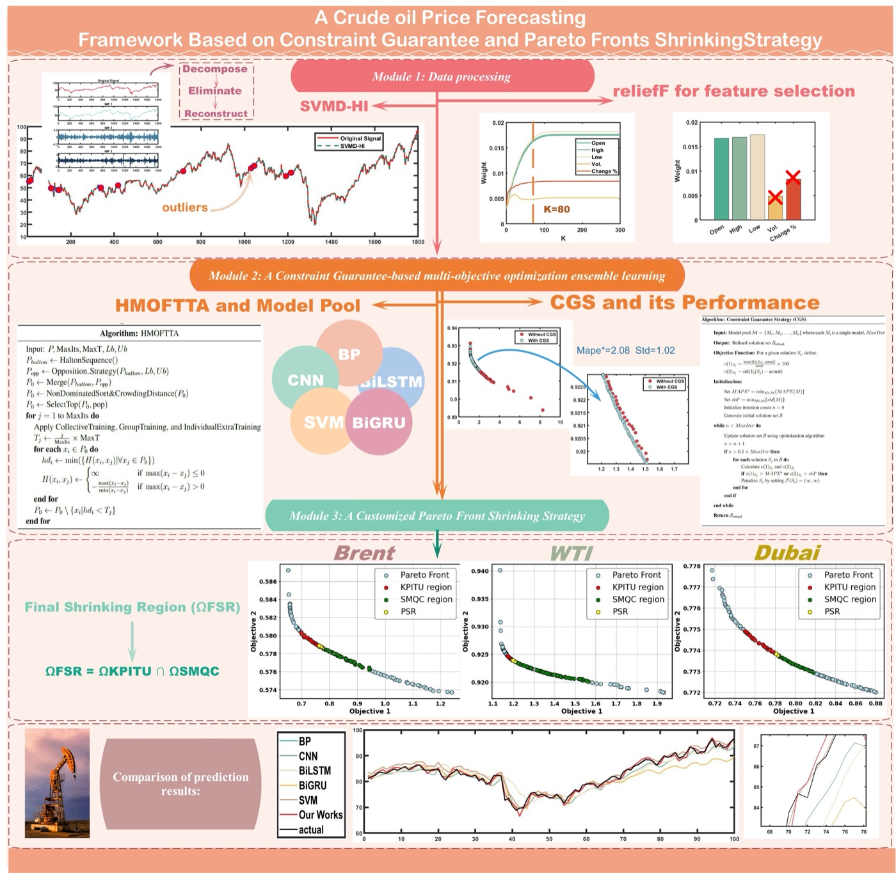
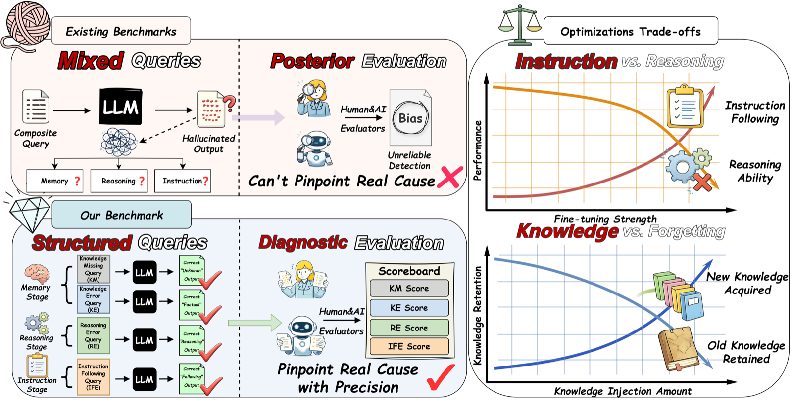
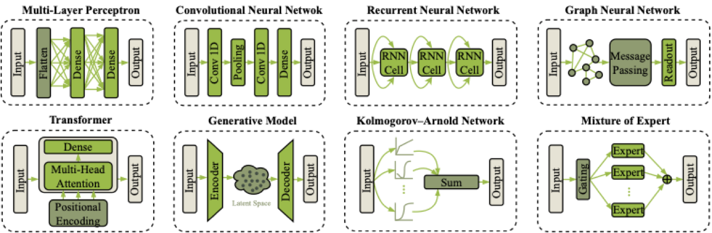

Travel
Curiosity stays mobile.
I like bringing a sense of movement into the site: clear routes, open spacing, and enough air to let the work breathe.
Academic Homepage
I am Yujie Chen (陈雨节), an incoming Ph.D. student in Computer Science at The Chinese University of Hong Kong, Shenzhen, starting in Fall 2026. My research sits at the intersection of energy systems, time-series learning, and trustworthy AI, with recent work on photovoltaic forecasting, electricity markets, crude oil prices, and LLM evaluation.

Outside Research
New places help me reset perspective and ask sharper questions.
Melody keeps me close to timing, language, and emotional texture.
Training adds patience and rhythm to long research cycles.
Travel
I like bringing a sense of movement into the site: clear routes, open spacing, and enough air to let the work breathe.
Singing
The visual rhythm here stays soft and minimal, but not flat. Headlines, images, and citations are paced more like a setlist than a list.
Fitness
I prefer models and interfaces that feel structured, efficient, and repeatable instead of decorative for decoration’s sake.
Selected Publications
I keep the descriptions short and visual. The first two journal papers are the anchor pieces, followed by three newer conference and collaborative works.

01 Applied Energy · 2025Zhirui Tian, Yujie Chen* (co-first author), and Guangyu Wang. Applied Energy, 386:125525, 2025.

02 Applied Soft Computing · 2025Yujie Chen and Zhirui Tian*. Applied Soft Computing, 112996, 2025.
Yikai Lu, Yujie Chen, and Tongxin Li. 2026 IEEE PES International Meeting (PES IM), pp. 1-5, 2026.

04 ACL Main Conference · 2026Yuhe Wu, Guangyu Wang, Yuran Chen, Jiatong Zhang, Yutong Zhang, Yujie Chen, Jiaming Shang, Guang Zhang, and Zhuang Liu. ACL 2026 Main Conference, 2026.

05 EEM 2026 · AcceptedRunyao Yu, Derek W. Bunn, Julia Lin, Jochen Stiasny, Fabian Leimgruber, Tara Esterl, Yuchen Tao, Lianlian Qi, Yujie Chen, Wentao Wang, et al. 22nd International Conference on the European Energy Market (EEM 2026), accepted, 2026.
Work Experience
School of Data Science, The Chinese University of Hong Kong, Shenzhen
Shenzhen, China
Medical Artificial Intelligence Lab, Westlake University
Hangzhou, China
Key Laboratory of Big Data Management, Optimization and Decision
Dalian, Liaoning, China · Developed the bionic robot real-time dialogue system.
Education
The Chinese University of Hong Kong, Shenzhen (CUHK-Shenzhen)
Dongbei University of Finance and Economics
Dalian, China · GPA: 4.42 / 5.0 · Rank: 1 / 60
Services
Honors & Awards